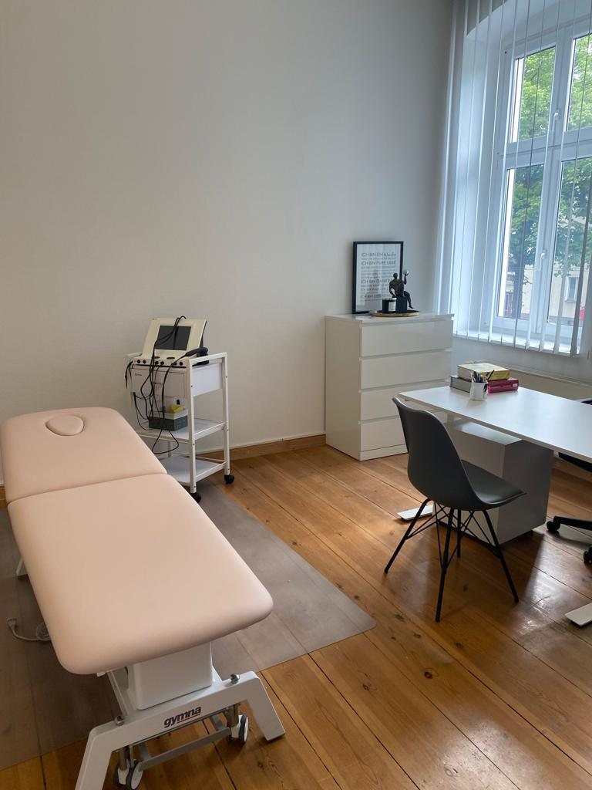

Schropfen
Eine der altesten naturheilkundlichen Therapien – Trockenschropfen, Blutiges Schropfen & Schröpfmassage.
Mehr erfahren →
Osteopathische Techniken
Ganzheitliche Diagnose und Behandlung mit den Handen – Blockaden spuren und losen.
Mehr erfahren →